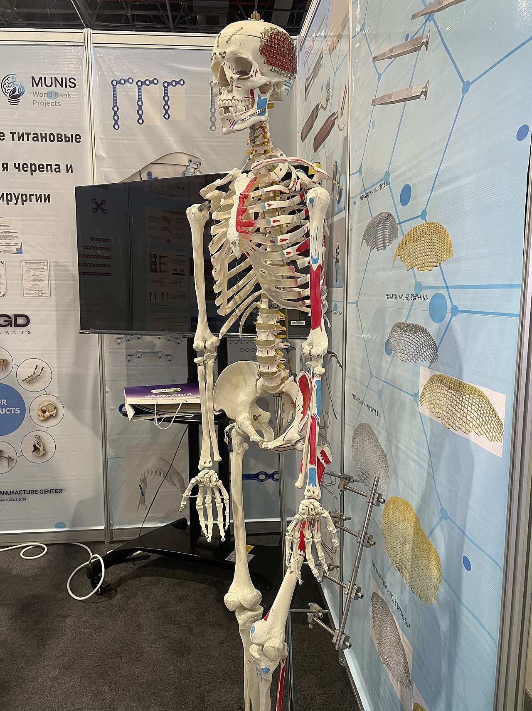

كتاب العلوم — الجزء الأول من المقرر — طبعة ١٤٤٧ / ٢٠٢٥
الحركة والإحساس
الصف السادس الابتدائي الوحدة الثانية: عمليات الحياة الفصل الرابع: عمليات الحياة في الإنسان والحيوانات — الدرس الثاني
إعداد: نايف المطيري
موقع الدرس
أين نحن الآن؟
ص ١٢٠
الوحدة
الوحدة الثانية: عمليات الحياة
الفصل
الفصل الرابع: عمليات الحياة في الإنسان والحيوانات
الدرس
الدرس الثاني: الحركة والإحساس
السؤال الأساسي: كيف تعمل أجهزة الجسم معًا لتسمح بالحصول على الطاقة والحركة والاستجابة للبيئة؟
أهداف التعلم
ماذا سأتعلم في هذا الدرس؟
أصف الجهاز الهيكلي وأذكر وظيفتيه الرئيستين.
أوضِّح كيف يعمل الجهاز العضلي مع الجهاز الهيكلي على الحركة.
أميِّز الهيكل الخارجي في المفصليات.
أذكر أجزاء الجهاز العصبي ووظيفة كلٍّ منها.
أعرِّف الهرمونات وأبيِّن دور جهاز الغدد الصمَّاء.
أوضِّح كيف يتكامل عمل أجهزة جسم الإنسان.
أنظر وأتساءل
تمهيد
ص ١٢٠
يستطيع طائر الببغاء الطيران مسافةً تزيد على ٧٠٠ كلم يوميًّا للبحث عن الغذاء.
فما الذي يحرِّك أجنحته؟
معرفة سابقة
ما الذي أعرفه من قبل؟
الفقاريات
حيواناتٌ لها عمودٌ فقريٌّ وهيكلٌ داخليٌّ من العظام.
المفصليات
لافقارياتٌ لها هيكلٌ خارجيٌّ وأرجلٌ مفصلية.
أجهزة الجسم
مجموعةٌ من الأعضاء تعمل معًا لأداء وظيفة.
المفردات
مفردات الدرس
ص ١٢٢
الجهاز الهيكلي
يتكوَّن من العظام والأربطة والأوتار، ويحمي الأعضاء ويدعم الجسم.
الجهاز العضلي
مصدر القوة التي تحرِّك العظام.
الجهاز العصبي
يشتمل على الدماغ والحبل الشوكي والأعصاب وأعضاء الحس.
جهاز الغدد الصمَّاء
جهازٌ يفرز الهرمونات.
الهرمون
مادةٌ كيميائيةٌ تفرز في الدم مباشرةً وتغيِّر أنشطة الجسم.
مهارة القراءة في هذا الدرس: التلخيص.
أستكشف
كيف تعمل العضلات؟
ص ١٢١
أتوقَّع: كيف تساعدني العضلات على الحركة؟ ماذا يحدث عندما تنقبض عضلةٌ مرتبطةٌ مع عظم؟
أحتاج إلى
ماصَّة عصير
مقص
معجون أطفال
مشابك ورق
خيط
أختبر توقُّعي
أعمل نموذجًا: أعمل شقًّا عرضيًّا صغيرًا في منتصف ماصَّة العصير، بحيث يسهل ثنيها في اتجاهٍ واحد.
أثبِّت قطعة معجونٍ كبيرةً على أحد طرفَي الماصة، وقطعةً أخرى أصغر حجمًا على الطرف الآخر.
أغرس مشابك ورقٍ في كل قطعةٍ وبشكلٍ عمودي، وأربط خيطًا في المشبك الورقيِّ المثبَّت في القطعة الصغيرة.
أسحب الخيط ليمرَّ من خلال مشبك الورق المغروس في الكرة الكبيرة.
أجرِّب: أسحب الخيط لأمثِّل كيف تعمل العضلة، وماذا يحدث عندما تنقبض، وماذا يحدث عندما تعود إلى وضعها الأصلي؟
أستكشف
أستخلص النتائج
ص ١٢١
٦ – أيُّ أجزاء النموذج يمثِّل العظام، وأيها يمثِّل العضلات؟
سؤال الكتابالماصَّة تمثِّل العظام، والخيط يمثِّل العضلة (والوتر) الذي يسحب العظم عند انقباضه. أما الشقُّ في منتصف الماصة فيمثِّل المفصل.
٧ – أستنتج: أيُّ عضلات الجسم تشبه هذا النموذج؟ أوضِّح ذلك.
سؤال الكتابإجابة نموذجية مقترحة: عضلات الذراع (كعضلة العضد) وعضلات الرِّجل؛ فهي ترتبط بالعظام بأوتار، وعندما تنقبض تسحب العظم فينثني المفصل، تمامًا كما سحب الخيطُ الماصَّةَ فانثنت عند الشق.
٨ – كيف تعمل العضلات؟ وماذا يحدث عندما تنقبض العضلات وعندما تنبسط؟ أوضِّح ذلك.
سؤال الكتابتعمل العضلات بالسحب فقط ولا تدفع أبدًا. فعندما تنقبض العضلة تقصُر فتسحب العظم المرتبط بها فيتحرَّك، وفي الوقت نفسه تنبسط العضلة المقابلة لتسمح للعظم بالحركة. ولهذا تعمل العضلات في أزواجٍ أو مجموعاتٍ متقابلة.
أستكشف أكثر: ماذا يحدث إذا لم أعمل شقًّا في الماصَّة؟
نشاط الكتابإجابة نموذجية مقترحة: لن تنثني الماصة عند سحب الخيط بل تتحرك كقطعةٍ واحدة؛ لأن الشق يمثِّل المفصل. وهذا يبيِّن أن الحركة تحتاج إلى مفاصلَ بين العظام.
أحذر: أستعمل المقص بحذر، ولا أضع المعجون في فمي.
الفكرة الرئيسة
الفكرة الرئيسة للدرس
ص ١٢٢
يعمل الجهاز الهيكلي والجهاز العضلي معًا لتمكين الجسم من الحركة، ويعمل الجهاز العصبي وجهاز الغدد الصمَّاء معًا لتنظيم أنشطة الجسم والاستجابة للبيئة.
أجهزةٌ للحركة والإحساس
الهيكلي
العظامالأربطةالأوتار
العضلي
الانقباضالانبساط
العصبي
الدماغالحبل الشوكيالأعصاب
الغدد الصمَّاء
الهرموناتالأدرينالين
شرح
ما الجهاز الهيكلي؟
ص ١٢٢
تحتاج الحيوانات إلى الانتقال من مكانٍ إلى آخر للحصول على الغذاء أو الهرب من الأعداء. وللحيوانات تراكيبُ مختلفةٌ تساعدها على الحركة.
الفقاريات — ومنها الإنسان — لها جهازٌ هيكليٌّ يتكوَّن من العظام والأربطة والأوتار.
الجزء
الوصف
العظام
نسيجٌ صلبٌ وخفيفٌ وقوي.
الأربطة
نسيجٌ يربط العظام بعضها ببعض.
الأوتار
نسيجٌ يربط بين العظام والعضلات.
الجهاز الهيكلي
وظيفتا الجهاز الهيكلي
ص ١٢٢ – ١٢٣
الوظيفة الأولى: الحماية
تحمي العظام بعض الأعضاء الطريَّة في الجسم؛ فالقفص الصدري يحمي القلب والرئتين، والجمجمة قاسيةٌ جدًّا لتحمي الدماغ الحسَّاس من الإصابة، كما أنها خفيفة الوزن ليسهُل إبقاء الرأس منتصبًا.
الوظيفة الثانية: الدعم والحركة
توفير هيكلٍ صلبٍ للجسم ليُكسبه شكله، وليساعده على الحركة.
من أجزاء الهيكل في الأرنب: الجمجمة، والفقرة، والضلع، والحوض، والفخذ.
الجهاز العضلي
ما الجهاز العضلي؟
ص ١٢٣
العظام تتحرَّك بسهولة، ولكنها لا تستطيع الحركة وحدها، ومصدر القوة التي تحرِّكها هو الجهاز العضلي.
ترتبط معظم العضلات مع العظام بأوتارٍ مرنةٍ قوية. فعندما تنقبض العضلات تتحرَّك العظام.
والعضلات التي تسبِّب الحركة تعمل في أزواجٍ أو مجموعاتٍ متقابلة.
الجهاز العضلي
كيف يركض الأرنب؟
ص ١٢٣
تُرسَل أوامرُ أو تعليماتٌ على شكل إشاراتٍ كهربائيةٍ من الدماغ إلى العضلات في رجلَيه لتنقبضَ أو تنبسط.
تقوم العضلات المنقبضة بسحب الوتر الذي يحرِّك عظم الرِّجل.
تسحب مجموعةٌ من العضلات رِجل الأرنب عاليًا، وتقوم العضلات المقابلة بسحب رجل الأرنب إلى أسفل.
وعندما تقوم عضلةٌ ما بالانقباض تقوم العضلة المقابلة بالانبساط، وتستمر هذه العملية ما دام الأرنب يركض.
العضلات تقوم بعملية السحب، ولا تقوم بعملية الدفع أبدًا.
ويعمل الجهازان الهيكلي والعضلي في الإنسان بطريقةٍ متشابهةٍ لعملهما في الأرنب.
الهيكل الخارجي
الهيكل الخارجي
ص ١٢٣
يوجد الهيكل الخارجي للمفصليات على السطح الخارجي لأجسامها، وهو تركيبٌ قاسٍ متماسكٌ مرتبطٌ مع مفاصلَ متحركة.
عند الفقاريات يعمل الجهاز الهيكلي على الحماية وتوفير الدعم والمساعدة على الحركة.
عند المفصليات ومنها الخنافس: عليها أن تتخلَّص من هيكلها الخارجي وتكوِّن هيكلًا جديدًا حتى تنمو.
أختبر نفسي
أسئلة صفحة ١٢٣
ص ١٢٣
ألخِّص: ماذا يحدث لعضلات رِجل الأرنب عندما يركض؟
سؤال الكتابترسل الدماغ إشاراتٍ كهربائية إلى عضلات الرِّجل، فتنقبض مجموعةٌ من العضلات وتسحب الوتر فترفع الرِّجل، وفي الوقت نفسه تنبسط العضلات المقابلة، ثم تنعكس العملية فتسحب العضلات المقابلة الرِّجلَ إلى أسفل، وتتكرَّر ما دام الأرنب يركض.
التفكير الناقد: العضلات التي تحرِّك أصابع يدك موجودةٌ في ذراعك، فكيف تستطيع أصابعك أن تتحرَّك؟
سؤال الكتابإجابة نموذجية مقترحة: ترتبط تلك العضلات بعظام الأصابع بوساطة أوتارٍ طويلة تمتد من الذراع عبر الرسغ إلى الأصابع. فعندما تنقبض العضلة في الذراع تسحب الوتر، فيتحرَّك عظم الإصبع.
الجهاز العصبي
ما الأجهزة العصبية؟ وما أجهزة الغدد الصمَّاء؟
ص ١٢٤
يشتمل الجهاز العصبي في الفقاريات على الدماغ والحبل الشوكي والأعصاب وأعضاء الحسِّ.
الجزء
الوظيفة
الدماغ
ينظِّم حركات العضلات، ويفسِّر المعلومات التي تصله من أعضاء الحس، وينظِّم وظائف أعضاء الجسم.
الحبل الشوكي
يمرِّر المعلومات من الدماغ وإليه.
الأعصاب
ترسل معلومات من أجزاء الجسم المختلفة إلى الدماغ.
الغدتان الكظريتان
(فوق الكليتين) تفرزان هرمون الأدرينالين، وتهيِّئان الجسم لحالات الطوارئ والإجهاد.
الغدد الصمَّاء
الهرمونات
ص ١٢٤
يعمل الجهاز العصبي مع جهاز الغدد الصمَّاء الذي يفرز الهرمونات.
الهرمونات موادُّ كيميائيةٌ تفرز في الدم مباشرةً وتغيِّر أنشطة الجسم.
الاستجابة
الأرنب والثعلب: استجابةٌ في أقلَّ من جزءٍ من الثانية
ص ١٢٤
افترضْ أن أرنبًا شاهد ثعلبًا يركض في اتجاهه لكي يفترسَه:
تبدأ استجابة الأرنب عندما يرى الثعلب.
تقوم الخلايا العصبية في عينَي الأرنب بإرسال معلوماتٍ إلى الدماغ.
يستجيب الدماغ بإرسال أوامرَ ينقلها الجهاز العصبي إلى عضلات الأرجل في أقلَّ من جزءٍ من الثانية ليبدأ الأرنب الركض.
وفي الوقت نفسه يقوم جهاز الغدد الصمَّاء بإفراز هرمون الأدرينالين الذي يسرِّع من نبضات القلب ليزيدَ من الدم المتدفِّق إلى العضلات.
وحالما تزداد نبضات القلب يصبح الأرنب مستعدًّا للهرب أو الدفاع عن نفسه.
ويعمل الجهاز العصبي وجهاز الغدد الصمَّاء في جسم الإنسان بطريقةٍ مشابهةٍ تقريبًا لعملها في جسم الأرنب.
أقرأ الشكل
كيف تنتقل أوامر الدماغ إلى باقي أجزاء الجسم؟
ص ١٢٤
كيف تنتقل أوامر الدماغ إلى باقي أجزاء الجسم؟ إرشاد: أنظر إلى الأجزاء المتصلة بالدماغ والمنتشرة في الجسم.
إجابة سؤال «أقرأ الشكل»
سؤال الكتابتنتقل الأوامر من الدماغ إلى الحبل الشوكي، ومنه تتفرَّع الأعصاب المنتشرة في الجسم كله لتوصِّل الإشارات إلى العضلات والأعضاء، وتعيد المعلومات من الجسم إلى الدماغ.
أختبر نفسي
أسئلة صفحة ١٢٤
ص ١٢٤
ألخِّص: ماذا يحدث في الجهاز العصبي للأرنب عندما يشاهد ثعلبًا؟
سؤال الكتابترسل الخلايا العصبية في عينيه معلوماتٍ إلى الدماغ، فيفسِّرها الدماغ ويرسل أوامر عبر الحبل الشوكي والأعصاب إلى عضلات الأرجل لتنقبضَ فيبدأ الركض، ويحدث ذلك في أقلَّ من جزءٍ من الثانية.
التفكير الناقد: ماذا يمكن أن يحدث إذا استغرقت الأوامر المرسلة من الدماغ إلى رِجل الأرنب دقيقة؟
سؤال الكتابإجابة نموذجية مقترحة: لن يستطيع الأرنب الهرب في الوقت المناسب، فيدركه الثعلب ويفترسه. فسرعة نقل الإشارات العصبية ضروريةٌ لبقاء المخلوق الحي.
نشاط تفاعلي
أيُّ جهازٍ يقوم بهذه المهمة؟
تدريب إضافي
أختار الجهاز المسؤول عن كل مهمة.
——
أبدأ التصنيف.
النتيجة: ٠ / ٠
تكامل الأجهزة
كيف يتكامل عمل أجهزة جسم الإنسان؟
ص ١٢٥
تعمل أجهزة الجسم في الإنسان وبعض الحيوانات لبقائها على قيد الحياة، وتجعلها قادرةً على القيام بالعمليات الحيوية المختلفة وأنشطتها المتعددة.
العضلي والهيكلي حركة الجسم تنتج عن انقباض العضلات وانبساطها، ويدعم الجهاز الهيكلي الجسم ويكسبه شكلًا خاصًّا، ويحمي أعضاءه الداخلية ومنها القلب والرئتان والدماغ.
الهضمي مسؤولٌ عن هضم الطعام وامتصاصه، ويساعده على ذلك أعضاءٌ أخرى منها الكبد والبنكرياس والأوعية الدموية.
تكامل الأجهزة
بقية الأجهزة
ص ١٢٥
التنفسي
يزوِّد الجسم بالأكسجين بعملية الشهيق، ويُخرج ثاني أكسيد الكربون والماء بعملية الزفير.
الدوران
يوزِّع الدم على جميع خلايا الجسم ليحمل إليها الغذاء والأكسجين ويخلِّصها من الفضلات.
الإخراج
يتخلَّص الجسم من الفضلات عن طريق الجلد والجهاز البولي؛ حيث يقومان بتنقية الدم وتصفيته من الفضلات.
أما الجهاز العصبي فهو المسؤول عن تنظيم جميع أنشطة الجسم.
نشاط الكتاب
تكامل عمل أجهزة الجسم
ص ١٢٥
أجرِّب. أقيس نبضي عندما أكون مستريحًا. لقياس النبض أضغط بأطراف أصابعي برفق على معصمي حتى أشعر بالنبض، ثم أعُدُّ النبضات في ٣٠ ثانية.
أمشي في مكاني دقيقة، وأقيس نبضي في ٣٠ ثانية، وأسجِّل النتيجة.
أهرول في مكاني دقيقة، وأقيس نبضي في ٣٠ ثانية، وأسجِّل النتيجة.
أستعمل الأرقام. أمثِّل البيانات التي جمعتُها برسمٍ بيانيٍّ لتوضيح العلاقة بين عدد النبضات والنشاط الذي مارستُه.
إذا شعرتُ بتعبٍ أو دوارٍ أتوقَّف عن النشاط وأخبر المعلم.
نشاط الكتاب
نشاط تكامل الأجهزة — الاستنتاج
ص ١٢٥
٥ – أستنتج: كيف تكامل عمل الجهازين الدوراني والعضلي في جسمي؟
نشاط الكتابكلما زاد نشاط العضلات ازدادت حاجتها إلى الأكسجين والغذاء، فيستجيب جهاز الدوران بزيادة عدد نبضات القلب ليضخَّ دمًا أكثر إلى العضلات. ولهذا زاد عدد النبضات عند المشي، وزاد أكثر عند الهرولة.
أختبر نفسي
أسئلة صفحة ١٢٥
ص ١٢٥
ألخِّص: ماذا يحدث للطعام في الجهاز الهضمي للإنسان؟
سؤال الكتابيُمضغ الطعام في الفم، ثم ينتقل عبر المريء إلى المعدة حيث يحلِّله الحمض والإنزيمات، ثم إلى الأمعاء الدقيقة حيث تكتمل عملية الهضم وتُمتص المواد الغذائية إلى الدم، وتمتص الأمعاء الغليظة الماء، ويتخلَّص الجسم من الباقي بعملية الإخراج.
التفكير الناقد: ماذا يحدث للعضلات لو لم تكن متصلةً بأوتارٍ مع العظم؟
سؤال الكتابإجابة نموذجية مقترحة: لن تستطيع سحب العظام عند انقباضها، فلا يتحرَّك الجسم؛ لأن الوتر هو الذي ينقل قوة سحب العضلة إلى العظم.
مراجعة الدرس
الملخص المصوَّر
ص ١٢٦
الحركة
يعمل الجهاز الهيكلي والجهاز العضلي معًا لتمكين الجسم من الحركة.
الطوارئ
يعمل الجهاز العصبي وجهاز الغدد الصمَّاء معًا في حالات الطوارئ والإجهاد.
التكامل
يتكامل عمل أجهزة جسم الإنسان للقيام بالعمليات الحيوية المختلفة.
المطويات: أعمل مطويةً ألخِّص فيها ما تعلَّمته عن الجهاز الهيكلي والجهاز العضلي والجهاز العصبي.
مراجعة الدرس
أسئلة ١ – ٣
ص ١٢٦
١ – الفكرة الرئيسة: كيف يعمل جهاز الدوران، والجهاز التنفسي والعصبي والعضلي والهيكلي معًا على حماية الأرنب من الثعلب؟
سؤال الكتابيرى الأرنب الثعلب فترسل عيناه معلوماتٍ إلى الدماغ، فيرسل الجهاز العصبي أوامر إلى العضلات. ينقبض الجهاز العضلي فيسحب عظام الجهاز الهيكلي فيبدأ الركض. ويسرِّع جهاز الدوران ضخَّ الدم إلى العضلات، ويزوِّد الجهاز التنفسي الدمَ بالأكسجين اللازم لإطلاق الطاقة. فتعمل الأجهزة كلها معًا ليهرب الأرنب.
٢ – المفردات: تفرَز الهرمونات في الجسم عن طريق ………
سؤال الكتابجهاز الغدد الصمَّاء.
٣ – ألخِّص: كيف ينظِّم الجهاز العصبي عمل أجهزة جسم الأرنب لمساعدته على التخلص من خطرٍ يهدِّد حياته؟
سؤال الكتابيستقبل الدماغ المعلومات من أعضاء الحس، ويفسِّرها، ثم يرسل أوامر عبر الحبل الشوكي والأعصاب إلى العضلات لتنقبضَ فيهرب، ويحفِّز في الوقت نفسه جهازَ الغدد الصمَّاء لإفراز الأدرينالين الذي يسرِّع نبضات القلب ويزيد تدفُّق الدم إلى العضلات.
مراجعة الدرس
أسئلة ٤ – ٦
ص ١٢٦
٤ – التفكير الناقد: كيف تساعد زيادةُ نبضات القلب المخلوقَ الحيَّ على مواجهة الخطر؟
سؤال الكتابزيادة النبضات تزيد كمية الدم المتدفِّق إلى العضلات، فيصلها أكسجينٌ وغذاءٌ أكثر، فتتحرَّر طاقةٌ أكبر تمكِّن المخلوق من الهرب بسرعةٍ أو الدفاع عن نفسه.
٥ – أختار الإجابة الصحيحة: أيُّ الأجهزة الآتية يوفِّر القوة اللازمة لتحريك الجسم؟ أ) الجهاز العضلي ب) الجهاز الدوراني جـ) الجهاز العصبي د) جهاز الغدد الصمَّاء
سؤال الكتابأ) الجهاز العضلي.
٦ – أختار الإجابة الصحيحة: أيٌّ ممَّا يأتي له هيكلٌ خارجيٌّ دعامي؟ أ) الأرنب ب) الكلب جـ) الجندب د) السمكة
سؤال الكتابجـ) الجندب. فهو من المفصليات التي لها هيكلٌ خارجي.
إثراء اختياري
العلوم والرياضيات · العلوم والمجتمع
ص ١٢٦
عدد نبضات القلب
إذا علمتَ أن معدَّل نبضات القلب في الدقيقة ٨٠ نبضة، فما معدَّل نبضات القلب في يومٍ واحد؟
الحل
سؤال الكتابعدد دقائق اليوم = ٢٤ × ٦٠ = ١٤٤٠ دقيقة. ١٤٤٠ × ٨٠ = ١١٥٢٠٠ نبضة في اليوم الواحد.
التعاون
قال رسول الله ﷺ: «مَثَلُ المؤمنينَ في تَوادِّهم وتَراحُمِهم وتعاطُفِهم كمَثَلِ الجسدِ الواحد؛ إذا اشتكى منهُ عُضوٌ تَداعَى لهُ سائرُ الجسدِ بالسَّهَرِ والحُمَّى».
أكتب مقالًا عن أهمية التعاون في المجتمع مستشهدًا بأمثلةٍ من تكامُل عمل أجهزة الجسم.
تقويم ختامي
أختبر فهمي
تقويم تفاعلي
النسيج الذي يربط بين العظام والعضلات هو:
تعمل العضلات دائمًا عن طريق:
العظم الذي يحمي الدماغ هو:
تقويم ختامي
أختبر فهمي (٢)
تقويم تفاعلي
الهرمون الذي يسرِّع نبضات القلب في حالات الطوارئ هو:
الجزء الذي يمرِّر المعلومات من الدماغ وإليه هو:
المخلوق الذي يجب أن يتخلَّص من هيكله الخارجي لينمو هو:
بطاقة الخروج
قبل أن أغادر
أذكر وظيفتي الجهاز الهيكلي.
أوضِّح كيف تعمل العضلات في أزواجٍ متقابلة.
أذكر جهازين يعملان معًا عند مواجهة الخطر.
سؤالٌ أفكر فيه: لماذا يشعر الإنسان بتسارع ضربات قلبه عندما يفاجئه صوتٌ عالٍ؟
إثراء اختياري
لوحةٌ تفاعلية: كيف تعمل العضلات؟
إثراء اختياري
كيف يعمل الجهازان الهيكلي والعضلي معًا على الحركة.
العضلة القابضةالعضلة الباسطةالعظام
اضغط على العضلة أو العظم لتعرف دوره.
إثراء اختياري
لوحةٌ مصوَّرة: المسار العصبي للاستجابة
إثراء اختياري
مسار الاستجابة: من العين إلى الدماغ ثم إلى العضلات.
إثراء اختياري
هل تعلم؟ — آلةٌ محكمة
إثراء اختياري
١
في جسم الإنسان البالغ أكثر من ٢٠٠ عظمة، وأصغرها عظامٌ دقيقةٌ داخل الأذن الوسطى.
٢
حين تنسحب يدك فجأةً عن شيءٍ ساخن، تكون العضلة قد تحرَّكت قبل أن تشعر بالألم؛ لسرعة الإشارة العصبية.
٣
الابتسامة والعبوس كلاهما يحتاج إلى عضلاتٍ في الوجه تعمل في مجموعاتٍ متقابلة.
العظام والعضلات والأعصاب تعمل فريقًا واحدًا.
إثراء اختياري
بطاقات المفردات — اقلبها!
إثراء اختياري
الجهاز الهيكلياضغط لترى المعنى
يتكوَّن من العظام والأربطة والأوتار، ويحمي الأعضاء ويدعم الجسم.
الجهاز العضلياضغط لترى المعنى
مصدر القوة التي تحرِّك العظام.
الجهاز العصبياضغط لترى المعنى
يشتمل على الدماغ والحبل الشوكي والأعصاب وأعضاء الحس.
جهاز الغدد الصمَّاءاضغط لترى المعنى
جهازٌ يفرز الهرمونات.
الهرموناضغط لترى المعنى
مادةٌ كيميائيةٌ تفرز في الدم مباشرةً وتغيِّر أنشطة الجسم.
اضغط على البطاقة لترى المعنى.
إثراء اختياري
لعبة: صواب أم خطأ
إثراء اختياري
—
النتيجة
اقرأ العبارة ثم اختر.
إثراء اختياري
العلوم في حياتي
إثراء اختياري
جرِّب الآن
ضع يدك اليسرى على عضلة ذراعك اليمنى ثم اثنِ ذراعك: ستحسُّ العضلة القابضة وقد قصُرت وانتفخت.
سؤال تفكير
لماذا يحتاج لاعب كرة القدم إلى عظامٍ قويةٍ وعضلاتٍ مرنةٍ وأعصابٍ سريعة؟
🔎 إثراء مصوّر
عدسة العلوم
ألاحظ · أتساءل · أفسّر
ما الأجهزة التي تتعاون عندما ترى كرة وتحرّك يدك لالتقاطها؟

مجسّم تعليمي للهيكل العظمي يوضح العظام والمفاصل التي تدعم الجسم وتساعده على الحركة.
مسار مبسط لحركة إرادية؛ توجد استجابات منعكسة تختلف في مسارها العصبي.
👁️
العين
تستقبل معلومات الضوء.
🧪 مختبر الاستكشاف
شاهد تبادل عمل عضلتي ثني المرفق
أتوقّع · أجرّب · أقارن
كيف تتغير وضعية الساعد عندما نغيّر أمر الحركة في النموذج نفسه؟
أمر الحركة
الرسم يبين وضعية المفصل، لا قوة العضلة أو طولها الحقيقي؛ العضلات الواقعية تعمل بتنسيق أعقد من مفتاح تشغيل.
مؤشر وصفي لمقدار ثني المرفق
💪💪💪💪💪💪💪💪💪💪
الساعد أقرب إلى المد
ثني قليل في المرفق.
عند أمر المد تعمل العضلة الباسطة على سحب العظام في اتجاه المد، بينما يتغير نشاط العضلة المقابلة للسماح بالحركة.
توقّع النتيجة، ثم غيّر الحالة وشغّل المحاكاة.
🤔 لماذا تحتاج حركة الثني والمد إلى عضلات تعمل في اتجاهين متقابلين؟
انْتَهَى الدَّرْسُ
إعداد: نايف المطيري
العلوم — الصف السادس الابتدائي — الجزء الأول من المقرر الوحدة الثانية: عمليات الحياة · الفصل الرابع: عمليات الحياة في الإنسان والحيوانات · الدرس الثاني: الحركة والإحساس المصدر: كتاب الطالب، صفحات الكتاب: ١٢٠ – ١٢٦ — طبعة ١٤٤٧ / ٢٠٢٥